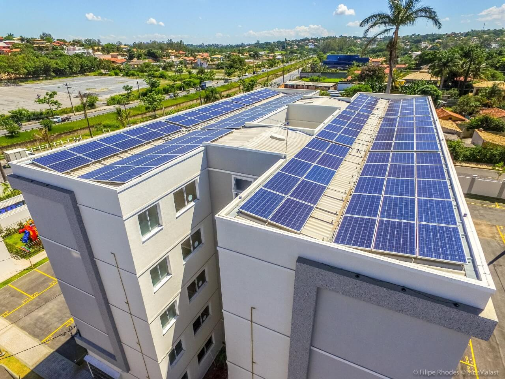
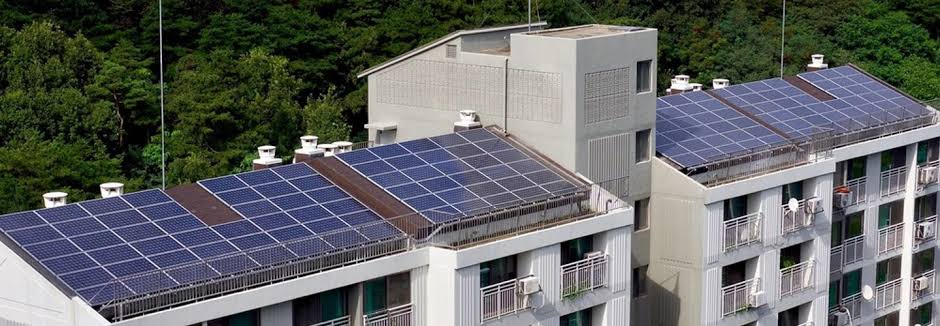
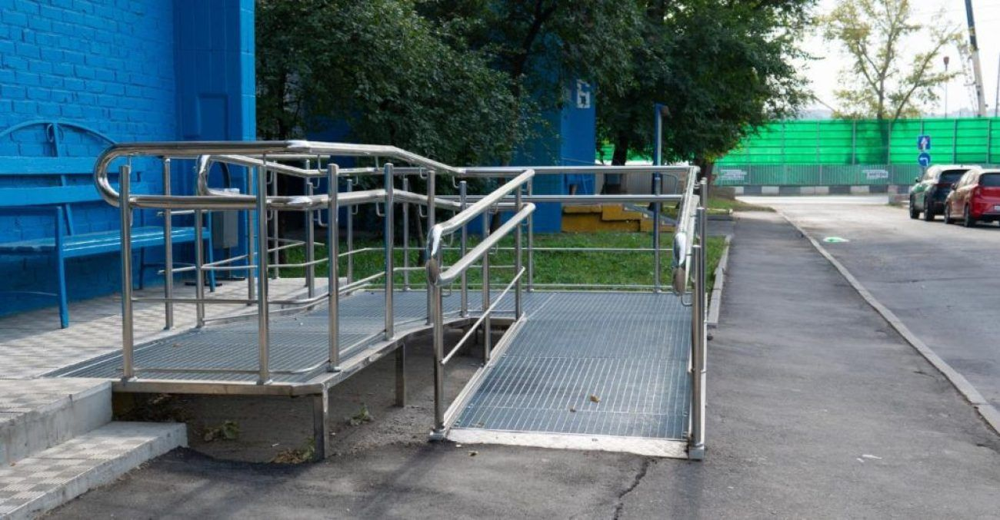
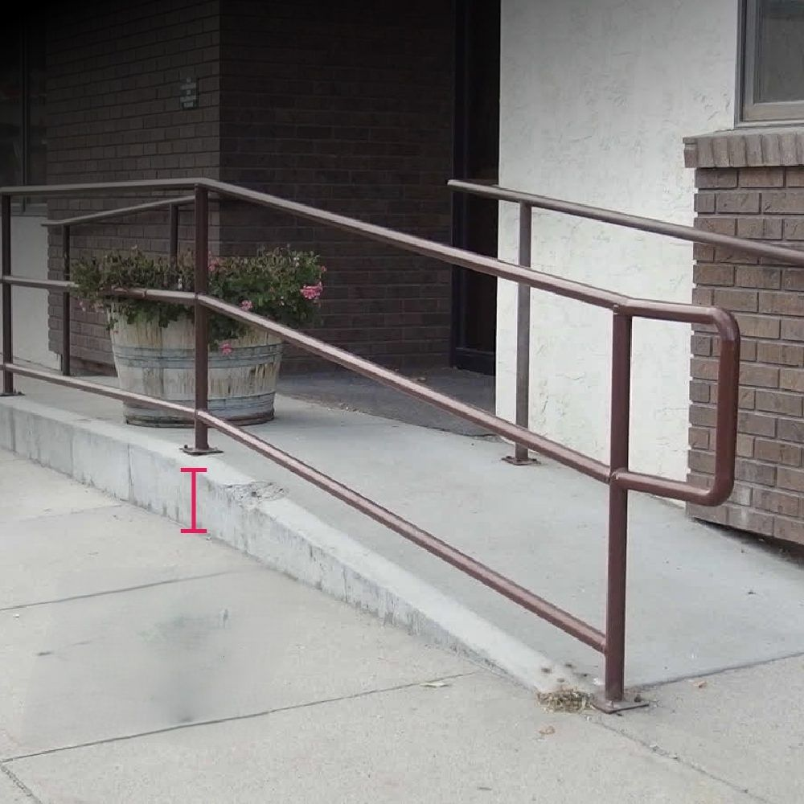

NOSSO TRABALHO EM IMAGENS
Galeria de instalações
Exemplos de soluções de energia limpa e acessibilidade semelhantes às que implantamos.




NOSSO TRABALHO EM IMAGENS
Exemplos de soluções de energia limpa e acessibilidade semelhantes às que implantamos.



